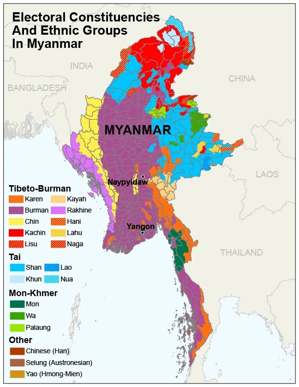

Myanmar – A Case Study for a Global Issue?

This second article in Geoliepolitics focuses on the troubled state of Myanmar – known commonly as Burma. The South-East Asian country has been in the grip of a vicious civil war since early 2021, when a military coup led by junta supremo General Min Aung Hlaing overthrew the government, plunging the country into an economic tailspin, erasing "a decade of economic improvement under semi-civilian rule" (The Economist). Over 1.3 million Burmese people have been displaced and over 30,000 soldiers have been killed in the fighting (May 2024).
It seems that everywhere you look, the globe tells stories of how our Westphalian nation-state system simply cannot cope with diverging 'national' populations of ethnically, racially, religiously diverse citizens who deserve fair democratic representation. Take the Eritrean and Tigrayan separatists from the previous article, Somalia and Somaliland, the Uyghurs in China, or the M23 Ugandan-backed rebels in the DRC, Sudan and South Sudan. And it isn't only in these far-off, seemingly abstract places. Within Europe there's Kosovo and Serbia, the IRA and the UK, whilst Spain is still wrestling with both Calatan and Basque separatists. The list goes on, and violence is the common thread.
Enter Stage Myanmar
Myanmar's turmoil is a poignant reminder of the vulnerabilities within the nation-state framework. The military coup of 2021 not only overturned a decade of progress but also exposed deep-seated ethnic and political fissures that had been simmering beneath the surface. The Tatmadaw, Myanmar’s military, has been notorious for its oppressive tactics, especially towards ethnic minorities such as the Rohingya, Shan, and Kachin. These groups have long sought autonomy and have faced brutal crackdowns, further escalating tensions within the country.
Ethnic Strife and Autonomy Movements
The plight of Myanmar’s ethnic minorities underscores a broader issue of representation and autonomy in diverse societies. The Rohingya crisis, which reached a horrifying peak in 2017 with accusations of genocide, is a stark illustration. Over 700,000 Rohingya fled to Bangladesh, escaping military atrocities. Meanwhile, the Kachin Independence Army (KIA) and Shan State Army (SSA) continue to clash with government forces, seeking greater autonomy or outright independence. This pattern of ethnic strife is not unique to Myanmar. Across the globe, ethnic minorities often find themselves marginalized and oppressed by central governments that prioritize a singular national identity over a pluralistic approach.
Global Parallels and the Westphalian Dilemma
The Westphalian model, based on the principles of sovereignty and non-interference, has been the bedrock of international relations since 1648. However, this model is increasingly challenged by internal diversity and demands for self-determination. The Uyghurs in China, for instance, face severe repression under the guise of maintaining national unity and security. The Chinese government's "Strike Hard" campaign has led to mass detentions and a significant curtailment of religious and cultural freedoms.
In Europe, the legacy of the breakup of Yugoslavia is still evident in the ongoing tension between Kosovo and Serbia. The IRA’s long campaign in Northern Ireland and the Basque separatist movement in Spain highlight that even established democracies struggle with integrating diverse identities within a single national framework. The situation in Catalonia, where a significant portion of the population seeks independence, further exemplifies the challenges of maintaining national unity in the face of strong regional identities.
Myanmar: A Microcosm of a Larger Issue
Myanmar’s current plight can thus be seen as a microcosm of the broader crisis facing many nation-states. The inability to accommodate ethnic, religious, and political diversity within a unified national structure often leads to violence and instability. The military’s harsh response to peaceful protests, with thousands detained and hundreds killed, has only deepened the crisis. The international community's response has been tepid, with sanctions and condemnations failing to effect significant change.
The Human Cost and the Path Forward?
The human cost of these conflicts is staggering. In Myanmar alone, over 1.3 million people have been displaced, creating a humanitarian crisis that reverberates across the region. The fighting has not only claimed over 30,000 soldiers' lives but has also devastated the civilian population. Schools and hospitals have been bombed, and entire villages have been razed, leading to a severe humanitarian crisis.
Addressing these challenges perhaps requires rethinking the very foundations of our political systems. Greater emphasis on federalism, autonomy, and inclusive governance could provide a path forward. In Myanmar, this could mean genuine power-sharing arrangements with ethnic minorities and a return to civilian rule with strong safeguards for human rights and democratic processes.
Myanmar’s tragedy is a stark reminder of the fragility of the nation-state in the face of internal diversity. As we look across the globe, from Africa to Europe to Asia, the recurring theme of conflict and separatism highlights the need for more inclusive and flexible political frameworks. The Westphalian system, while foundational, must evolve to address the realities of a diverse and interconnected world. It's possible that only through such evolution can we hope to achieve lasting peace and stability in regions torn apart by conflict and division.
